A) reconocerá el lenguaje generado desde la variable
En este método se escribe una rutina A por variable sintáctica  .
Se le da a la rutina asociada el mismo nombre que a la variable sintáctica
asociada. La función de la rutina
.
Se le da a la rutina asociada el mismo nombre que a la variable sintáctica
asociada. La función de la rutina A asociada con la variable
 es reconocer el lenguaje 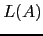
generado por
es reconocer el lenguaje 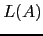
generado por  .
La estrategia general que sigue la rutina
.
La estrategia general que sigue la rutina A para reconocer
es decidir en términos del terminal 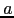
en la entrada
que regla de producción concreta
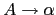
se aplica para
a continuación comprobar que la entrada que sigue pertenece al lenguaje generado por
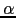
.
En un analizador predictivo descendente recursivo (APDR) se asume que el símbolo que actualmente
esta siendo observado (denotado lookahead) permite determinar unívocamente
que producción de  hay que aplicar.
Una vez que se ha determinado que la regla por la que continuar la derivación
es
se procede a reconocer
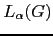
,
el lenguaje generado por
. Si
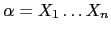
,
las apariciones de terminales 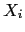
en
son emparejadas
con los terminales en la entrada mientras que las apariciones de variables 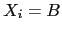
en
se traducen en llamadas a la correspondiente subrutina asociada con
hay que aplicar.
Una vez que se ha determinado que la regla por la que continuar la derivación
es
se procede a reconocer
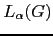
,
el lenguaje generado por
. Si
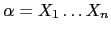
,
las apariciones de terminales 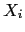
en
son emparejadas
con los terminales en la entrada mientras que las apariciones de variables 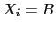
en
se traducen en llamadas a la correspondiente subrutina asociada con B.
Para ilustrar el método, simplificaremos la gramática presentada en el ejercicio 4.5.1 eliminando las declaraciones:
| statements
|
| statement
|
| expression
|
| term
|
| factor
|
La secuencia de llamadas cuando se procesa la entrada mediante el siguiente programa construye ``implícitamente'' el árbol de análisis sintáctico concreto.
Dado que estamos usando strict se requiere prototipar las funciones
al comienzo del fichero:
sub parse(); sub statements(); sub statement(); sub expression(); sub term(); sub factor(); sub idlist(); sub declaration(); sub declarations();
Para saber mas sobre prototipos consulte
![[*]](crossref.png) [4].
[4].
1 sub match {
2 my $t = shift;
3
4 if ($lookahead eq $t) {
5 ($lookahead, $value) = splice @tokens,0,2;
6 if (defined($lookahead)) {
7 $lookahead = $value if ($lookahead eq 'PUN');
8 } else { $lookahead = 'EOI'; }
9 }
10 else { error("Se esperaba $t y se encontro $lookahead\n"); }
11 }
12
13 sub statement {
14 if ($lookahead eq 'ID') { match('ID'); match('='); expression; }
15 elsif ($lookahead eq 'P') { match('P'); expression; }
16 else { error('Se esperaba un identificador'); }
17 }
18
19 sub term() {
20 factor;
21 if ($lookahead eq '*') { match('*'); term; }
22 }
23
24 sub expression() {
25 term;
26 if ($lookahead eq '+') { match('+'); expression; }
27 }
28
29 sub factor() {
30 if ($lookahead eq 'NUM') { match('NUM'); }
31 elsif ($lookahead eq 'ID') { match('ID'); }
32 elsif ($lookahead eq '(') { match('('); expression; match(')'); }
33 else { error("Se esperaba (, NUM o ID"); }
34 }
35
36 sub statements {
37 statement;
38 if ($lookahead eq ';') { match(';'); statements; }
39 }
40
41 sub parser {
42 ($lookahead, $value) = splice @tokens,0,2;
43 statements; match('EOI');
44 }
Como vemos en el ejemplo, el análisis predictivo confía en que, si estamos
ejecutando la entrada del procedimiento A,
el cuál está asociado con la variable  , el símbolo terminal
que esta en la entrada
determine de manera unívoca la regla
de producción
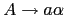
que debe ser procesada.
, el símbolo terminal
que esta en la entrada
determine de manera unívoca la regla
de producción
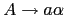
que debe ser procesada.
Si se piensa, esta condición requiere que todas las partes derechas
de
las reglas
de  ``comiencen'' por diferentes símbolos.
Para formalizar esta idea, introduciremos el concepto de
conjunto
``comiencen'' por diferentes símbolos.
Para formalizar esta idea, introduciremos el concepto de
conjunto
 :
:

donde:

Podemos reformular ahora nuestra afirmación anterior en estos términos:
Si
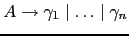
y los conjuntos
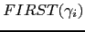
son
disjuntos podemos construir el procedimiento para la variable  siguiendo
este seudocódigo:
siguiendo
este seudocódigo:
sub A {
if ($lookahead in FIRST(gamma_1)) { imitar gamma_1 }
elsif ($lookahead in FIRST(gamma_2)) { imitar gamma_2 }
...
else ($lookahead in FIRST(gamma_n)) { imitar gamma_n }
}
Donde si 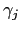
es
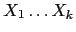
el código gamma_j consiste
en una secuencia
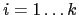
de llamadas de uno de estos dos tipos:
X_i si
es una variable sintáctica
match(X_i) si
es un terminal